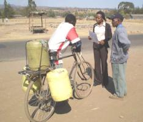

{kind=link}
{kind=link}
Introduction - Income from water
Water is life and it can also be a good business for people who have seen the potential of rainwater harvesting. Clean and fresh water falls as rains from the clouds at no costs at all. Why not use it?
| Woman carrying water on her back. |
| (c) E. Nissen-Petersen, Kenya |
People who cannot afford to buy water have to walk to water holes. Normally women have to walk several km to a water hole and back home with a 20 litres jerry-can (20 kg) of water on their back every second day. This can be observed in both wetter and drier regions as well as in towns.
| A woman loading 5 jerry-cans of water (100 kg) onto her donkey to bring the water to her home some 12 km away. |
| (c) E. Nissen-Petersen, Kenya |
Small scale farmers can increase their meager income and improve womens' livelihood by producing more crops and better livestock if they learn to get more water from harvesting rainwater and shallow groundwater by simple and cheap techniques.
For more information on how to harvest rainwater
For more information on how to harvest shallow ground water
1) Young people in rural areas could learn to earn salaries and school fees by assisting farmers to design and construct the simple structures used for rainwater harvesting.
2) The young generation could earn an income by becoming water vendors transporting the commodity from the water sources to the water consumers.
3) Builders, contractors and engineers could become self-employed as advisers and managers of water projects.
Common for all the innovations are that they improve the environment by harvesting rainwater that would otherwise have eroded farmland and roads, produced damaging flooding and devastating marine life and coral reefs with soil sediments and chemicals from fertilizers and pesticides.
Storage
Rains produce plenty of clean water running off roads, roofs and rocks. This water has to be stored for the dry seasons, when it is needed most. There are two main types of storage, namely
1) Storage in reservoirs, such as in dams and tanks
2) Storage in situ, such as in soil, sand and shallow ground water
For further information on water storage
Income generating business: Sale of water
Water from deep ground water can only be reached by hiring a company to drill a borehole. If fresh water is found in sufficient quantities and the water is not saline, the borehole is cased with a special piping.
A recent report for the Ministry of Water by PEM Consultants states that only 60 drilled boreholes are successful. Although Boreholes Contractors cannot guarantee anything, they must be paid in full for their drilling.
As a water business, it can be estimated that if recharge can allow pumping for 5 hours daily and the daily operation cost is Ksh 5,000, the actual income will be Ksh 10,000 per day.
With a loan of Ksh 3 million with 20% interest and fees, it will take 380 working days (3,000,000 + operation 200,000 + interest costs 600,000 / 10,000/day = 380) to recover the investment. Thereafter it is daily profit.
| A successful borehole in Machakos |
| (c) E. Nissen-Petersen, Kenya |
The organization operating the borehole mentioned above also has a tractor bowser which delivers water in bulk to institutions and well-to-do people.
A full bowser contains 3,000 litres, which sells for Ksh 5,000 minus operation costs of about Ksh 2,000. If the tractor can deliver 4 loads in a day the income is Ksh 12,000 daily.
With a loan of about Ksh 3 million + 20 % interest and fees for the tractor and bowser, it will take 300 working days (3,600,000 / 12,000 = 300) to recover the investment and start making profit
| A tractor bowser to deliver water in bulk to institutions |
| (c) E. Nissen-Petersen, Kenya |
A bicycle vendor buys water for Ksh 3 per jerry can and sells it for between Ksh 6 and Ksh 10 per jerry can depending on the distance he has to deliver the water.
The average income for bicycle vendors varies from Ksh 150 to Ksh 300 per day.
Although a hand-cart vendor can carry many more jerry cans of water than a bicycle their transport is slower and heavier.
|  |
| A bicycle vendor |
| (c) E. Nissen-Petersen, Kenya |
Therefore hand-cart vendors deliver water over short distances where the sale price is lower than for bicycle vendors. Nevertheless, due to the bulk and the daily payable rent for the cart, the cart-vendors earn about the same as bicycle vendors, namely about Ksh 200 per day.
| A hand-cart vendor |
| (c) E. Nissen-Petersen, Kenya |
The owner of a 7 tonnes lorry buys 350 jerry cans of water every days from a water kiosk at Thua riverbed for Ksh 5 per jerry can costing a total of Ksh 1,750.
The owner transports the water to Mutomo where he sells it for Ksh 20 per jerry-can, thus making an income of Ksh 15 per jerry can x 350 jerry cans =Ksh 5,250 to cover transport cost.
| Selling water |
| (c) E. Nissen-Petersen, Kenya |
Some homesteads have a bicycle which is used for transporting water from either a water kiosk or a waterhole in a riverbed.
| Transporting water with a bycicle |
| (c) E. Nissen-Petersen, Kenya |
Poor homesteads do not have bicycles or money to pay water. The little girls must therefore walk to a waterhole and carry water back home in small jerry cans strapped onto their heads.Some of these girls do not go to school and therefore miss their education completely. Usually, they are married when very young and continue carrying water all their life.
Water is free from water holes scooped in the sand of the so-called dry riverbeds.
| Child carrying water |
| (c) E. Nissen-Petersen, Kenya |
Income generating employment: Consultants, Contractors
Hiring of Consulting Engineers
It is important for all applicants to write their CV in perfect English on good paper with a clear and comprehensive text, which the reader can understand by a glance. A CV should contain the following information:
Curriculum Vitae
- 1. Personal data
Name :
Date of birth :
ID number :
Citizenship :
Marital status :
Number of children :
Country of residence :
- 2. Education
From date to date :
From date to date :
- 3. Employment records
Employer's Company name Period of service and length Position with the employer . . . . . .
- 4. Language skills
Language Speaking skills Reading skills Writing skills English . . . . . . .
- 5. Other Skills
- 6. Referees
1) Read the adverts in daily newspapers where companies and organizations advertise for engineers under advertisements and sections named VACANCY, JOB VACANCY, POSITIONS VACANT, CAREER OPPORTUNITY, etc. Reply to relevant adverts by sending photocopies of CV, certificates, diplomas, letter of recommendations, etc.
Never send original documents and never ask for return of the posted photocopies.
2) Locate resourceful persons who can be used as the first step on the ladder to a better position in life. Such persons might be found at agricultural shows, exhibitions, workshops, conferences and construction sites. Give them a one page summary of your CV with your mobile number without long talks. When, and if, your skills are required they might call you for an interview.
3) Gain experience by offering assistance in AutoCAD drawings, Internet and other specific computer skills for a low fee to experienced engineer or contractor who are lacking such skills.
Consultants
Experienced engineers can be self-employed as Consulting Engineers or Consultants provided they register a company of which they may be the Managing Director for a board of Directors who have shares in the company. The requirements for the establishment of a registered company in Kenya are:
1. An ID card
2. A Personal Identification Number (PIN number)
3. A post box address
4. A physical address
5. Telephone, fax and email
6. A single Business Permit
7. Registration certificate of the company
8. Certificate of Incorporation
9. Bank account
10. Annual Returns by a Certified Public Accountant
- Expression of interest
- Request for proposals
- Invitation for BIDS, etc.
Contractors
Contractors are self-employed building entrepreneurs who have a good technical and financial background who register companies similar to those listed above for consultancy firms.
Contractors also study advertisements in newspapers such as:
- Invitation for pre-qualification of contractors
- Invitation for BIDS, etc.
Income generating employment: Self-employed artisans
| Selling burnt bricks |
| (c) E. Nissen-Petersen, Kenya
|
| Stones crushed into ballast are sold |
| (c) E. Nissen-Petersen, Kenya
|
Road side marketing is the cheapest and most efficient way of marketing. Items can be sold at good prices along main roads where many travelers pass by, provided there is good and safe parking place for vehicles.
| Notices pinned on tree |
| (c) E. Nissen-Petersen, Kenya
|
| Notes pinned on telephone pole |
| (c) E. Nissen-Petersen, Kenya
|
Posters and notices are other cheap methods of marketing the sale of goods and the provision of services. Hand written or printed notices pinned onto trees and telephone poles situated along roads with many passers-by are effective messengers.
| Nottice board in shopping centre |
| (c) E. Nissen-Petersen, Kenya
|
Notice boards in shopping centres and at public offices also provide excellent marketing opportunities. However, ask for permission before pinning anything on a notice board because there might be a small fee to pay every week or month.
| Notices pinned on the notice board |
| (c) E. Nissen-Petersen, Kenya |
|
The uneven ears seen on the notices pinned to the notice board are strips of papers with telephone numbers which can be pulled off by interested persons who want to phone for further details at a later stage.
|
| Signboard at the road |
| (c) E. Nissen-Petersen, Kenya |
|
Signboards are usually painted in bright colours with an arrow pointed to e.g. a hair saloon, which is situated a short walking distance from the road. |
| Don't set up your signboard among many signboards |
| (c) E. Nissen-Petersen, Kenya |
|
While a good signboard set up in a right place might bring many customers, it is doubtful whether a good signboard can attract clients if it is set up among many signboards.
|
| Old signboard |
| (c) E. Nissen-Petersen, Kenya |
|
Signboards have to be repainted once or twice annually to appear attractive and to show that the business is active and doing good business. |
Transportable signboards and exhibits
| Signboard and exhibit of a Super Money Maker pressure irrigation pump |
| (c) E. Nissen-Petersen, Kenya
|
The photo shows a signboard and exhibit of a Super Money Maker pressure irrigation pump. A contractor has made and sold many by transporting the exhibits by bus from one village to another on market days. However, be aware that foot pumping is so tiresome, when pumping from a few metres depth, that customers will come back complaining they have been cheated.
Photo albums
Many small scale manufacturers who cannot afford to display all their produce, such as furniture, use photos to show the various types of beds, chairs, sofa sets, water tanks, gutters etc. which they can make. When a potential customer shows interest in the goods or services being offered, it is important to quote a realistic price with a profit margin of 10% to 20%, plus a similar amount for reducing the price when bargaining. Buyers usually have good knowledge of the going prices, and will walk away if a seller tries to sell them an item at double or triple the normal price.
 |
| Seller with photo album |
| (c) E. Nissen-Petersen, Kenya
|
Brochures
A brochure can be printed cheaply by an internet cafe or somebody having a computer, scanner and printer, e.g. by using both sides of an A4 paper and folding it in three columns. Brochures can be printed in many copies and distributed during agricultural shows, exhibitions and conferences, or attached onto trees, telephone poles and notice board.
| Brochure |
| (c) E. Nissen-Petersen, Kenya
|
Information Source Links
- Nissen-Petersen, E. (1982). Rain Catchment and Water Supply in Rural Africa: A Manual. Hodder and Stoughton, Great Britain. ISBN 0340-28429-3.
- Nissen-Petersen, E., Madsen, B. and Katui-Katua, M. (2006). Water for Rural Communities. Kenya
- Several handbooks on water management under: Water for Arid Land: www.waterforaridland.com